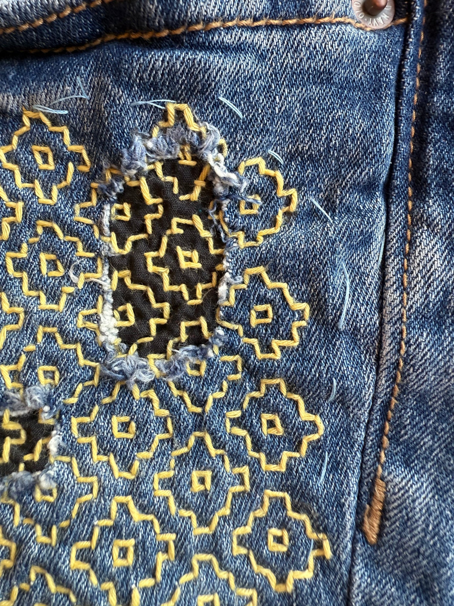

The Word That Stops You Before You Throw Something Away
wabisabi-jp.com, June 22, 2024
My grandmother never wasted a grain of rice. Not as a rule she stated out loud — it was simply how she lived. When I left food on my plate as a child, she didn’t scold me. She just said the word quietly, almost to herself: mottainai. It stopped me every time.
もったいない is one of those Japanese words that resists clean translation. The closest English gets is “what a waste” — but that phrase sounds like a complaint. Mottainai is something closer to regret, or reverence. It carries the sense that an object has inherent value, that effort and care and materials went into making it, and that discarding it carelessly is a kind of disrespect. Not to any person in particular. To the thing itself.

unknown artist, pinterest
Where the feeling comes from
Japan is a small country with limited natural resources. For most of its history, materials were precious — fabric scraps were reused, vegetable peels went into broth, broken tools were repaired rather than replaced. Mottainai grew out of that reality. It was not a philosophy invented by anyone. It simply became the word for a feeling people already had.
For many of us who grew up in Japan, mottainai was not something we learned. It was something we absorbed — at the dinner table, in the classroom, from grandparents who had lived through times when nothing could be wasted. Even now, decades later, I still hear it in my head before I throw something away. Not as guilt. More like a pause. A moment to reconsider.
The four R’s behind the word
Wangari Maathai, the Kenyan environmentalist and Nobel Peace Prize laureate, encountered the word mottainai and recognized something in it she felt was missing from Western environmental language. She began using it in her activism, framing it around four principles: reduce, reuse, recycle, and respect. That last one is the part most environmental discourse leaves out. Mottainai insists that the relationship between a person and an object is not purely transactional. There is something owed — attention, care, the acknowledgment that making this thing took something from the world.
How it shows up in Japanese craft
The spirit of mottainai runs through some of Japan’s most distinctive practices. Kintsugi — the art of repairing broken ceramics with gold — treats damage not as a reason to discard but as part of an object’s story. Hari kuyō is a ceremony where worn-out sewing needles are thanked for their service and laid to rest in soft tofu before being retired. Furoshiki, the reusable wrapping cloth, replaces disposable packaging with something that can be used thousands of times and still be beautiful.
None of these practices are about frugality for its own sake. They are about paying attention. About recognizing that objects have a kind of life — and that ending that life thoughtlessly is worth pausing over.
What it asks of us
Mottainai does not require minimalism, or decluttering, or any particular aesthetic. It asks something simpler and harder: to notice. To use things fully. To repair before replacing. To choose fewer things and care for them properly.
The objects we carry that philosophy into tend to be the ones we keep for a long time — the broom that outlasts ten plastic ones, the cloth that replaces a thousand paper ones, the cutting board that improves with use rather than degrading. Not because they are precious. Because they were made to be used, and we use them.
My grandmother’s rice bowls are still in the family. She would not find that remarkable. Of course they are — why would they not be?
Mottainai.